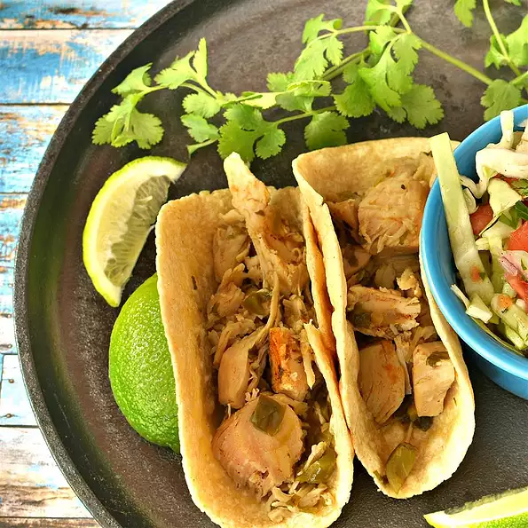

Spicy Turkey Tacos

Description
Great way to use all that leftover turkey! Serve tacos with lettuce, shredded cheese, and sour cream. A taco is a traditional Mexican dish consisting of a small hand-sized corn or wheat tortilla topped with a filling. The tortilla is then folded around the filling and eaten by hand.This Recipe is really easy to make and will fill your late night cravings.
Following are the ingredients you will need for the recipe:
ingredients
- 1 pound shredded cooked turkey meat
- 1/3 cup chopped cilantro
- 1 large jalapeno pepper, stemmed and halved
- 1(1 ounce) envelope hot taco seasoning mix
- 2 cups chicken broth, or as needed
- 6 small flour tortillas, or to taste
Once you have all the ingredients its time to make these delicious spicy turkey tacos.
Steps:
- Combine turkey, cilantro, jalapeno pepper, and taco seasoning mix in a slow cooker; pour in enough chicken broth to almost cover all the ingredients.
- Cook on Low for at least 3 hours.
- Heat a griddle over medium-low heat and cook tortillas until warmed, about 30 seconds per side. Fill tortillas with turkey mixture.